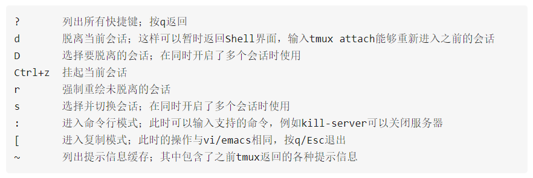
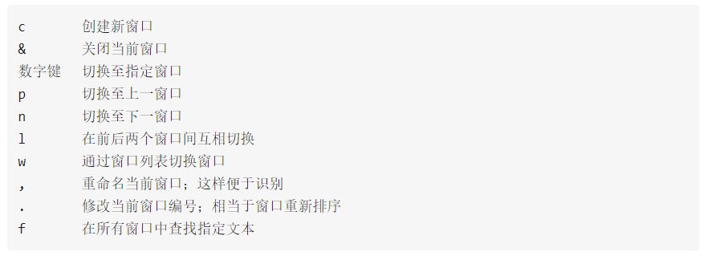
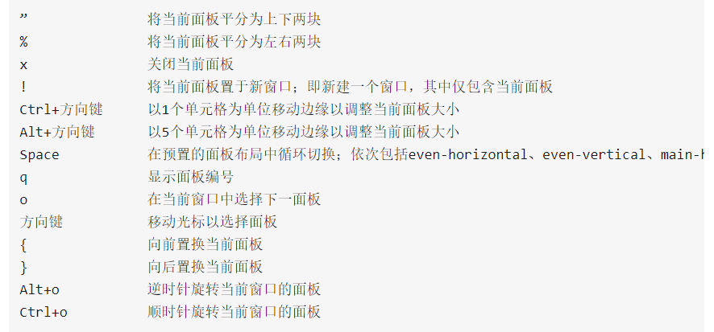

Tmux 常用操作
大部分摘抄自这里
- 查看所有会话
1 | $ tmux ls # or $ tmux list-session |
- 新建tmux会话
1 | $ tmux # 新建一个无名称的会话 |
- 断开当前会话，该会话会在后台运行 [Ctrl+b d]
1 | $ tmux detach # 断开当前会话，会话在后台运行 |
- 重新连接已存在的会话
1 | $ tmux a -t <session-name> # or $ tmux attach -t <session-name> |
- 杀死、关闭会话
1 | $ tmux kill-session -t <session-name> |
- 切换会话
1 | $ tmux switch -t <session-name> |
- 划分成上下两个窗格
1 | $ tmux split |
- 划分成左右两个窗格
1 | $ tmux split -h |
- 切换目标窗格
1 | - Ctrl+b 方向键上下左右 |
快捷键
所有快捷键的前序按键是Ctrl+b，然后再按下面表中列出的按键
系统操作

窗口操作

面板操作

Zsh 和 Oh-my-zsh
PS: 安装好zsh之后需要将.bashrc里面得PATH复制到~/.zshrc里，执行source ~/.zshrc可激活命令
安装
zsh1
sudo apt-get install zsh
非sudo用户也可以安装，再查查别的资料
修改默认的shell
1
2
3
4echo $SHELL #查看当前的shell，一般是 /bin/bash
cat /etc/shells #查看当前所有可用的shell，ubuntu下，zsh的在/usr/bin/zsh 中，而centOS中好像是在/bin/zsh
chsh -s /usr/bin/zsh # 修改默认shell
echo $SHELL # 再次查询，如果没变重启shell或者重新连接服务器修改完后，首次打开
zsh的shell会弹出设置，可以先跳过反向设置即可设置回去
安装
oh-my-zsh使用开源工具进行
zsh的配置，oh-my-zsh让配置更加简单1
2
3
4
5
6
7
8
9git clone git://github.com/robbyrussell/oh-my-zsh.git ~/.oh-my-zsh
备份现在的zshrc, 替换zshrc（设置文件）
cp ~/.zshrc ~/.zshrc.orig #如果是root装的，你可能没有，那么直接执行下面的话
cp ~/.oh-my-zsh/templates/zshrc.zsh-template ~/.zshrc
直接使用脚本安装
cd .oh-my-zsh/tools
./install.sh
与Tmux绑定，打开Tmux自动使用zsh
进入
tmux的设置文件1
2vi {$TMUX_PATH}/.tmux.conf
注意，一般来说相同目录下会有一个 example_tmux.conf 示例文件，而如果没有设置过，则.tmux.conf为空添加下面的代码
1
set-option -g default-shell /bin/zsh #后面是zsh的path
激活设置
1
tmux source-file .tmux.conf
其他问题：初次使用zsh的时候，会发生Home 和End等键无效，需要重新定义按键映射，相关的操作古谷歌。